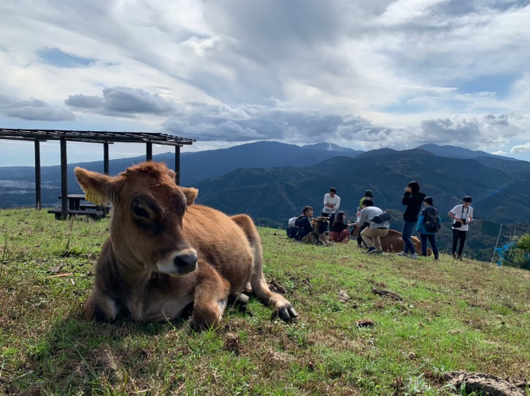

なぜAgrlienに入ったか…２
2020.05.21 伊藤
「なぜAgrlienに入ったか？」シリーズ第二弾。
農業に熱い思いを持つメンバーによる寄稿です！
---
私がアグリアンに入った理由は、大学の部活では専門的な知識を持った人がいないため、もっと農業に詳しい人たちの中で実践的な農作業をみて学びたいと思ったからだ。
――――――――――――――――
大学3年 春。
私はたくさんの思い出と共に、農業の可能性を知った。
大学1年 春。
友人たちが色々なサークルに入り華やかな大学デビューをした中、私は新歓にビビりまくりある意味大学デビューを逃した。
正直、心配性な私は新歓以前に授業について行けるのか、うまく復習できるか、試験は、、レポートは、、、不安なことだらけでサークル探しどころではなかった。
農業したいな。。。OO農業、週5でお手伝いなんてハードル高いなあ。（アグリアン発見）
大学１年 夏。
大学生活にも慣れ、友人と遊びに行く余裕もできた。ある程度自分で履修をくんだり、お昼休みに外にご飯を食べに行ったりできる大学生の自由度に感動。
友人1。。。まだサークル入らないの−？（大学生活との両立に不安を抱える）
大学１年 秋。
第２新歓ウェーブ到来。友人に誘われて友人が所属するサークルに見学へ行った。だがマネージャーとしてではなく自分も選手として参加したくなってしまい断念。そのうち友人たちから次々とサークルを辞めるか続けるか悩みの相談を受けはじめ、一緒に新たなサークルを探し始める。
友人2。。。まだサークル入らないの−？（友人は新しいサークルへ）
大学１年 冬。
授業と部活にも慣れ、サークルに入っても大丈夫かもと思い始めたとき、友人１が駒場祭で「好きそうなサークルがあったよ」と教えてくれた。
それはアグリアンだった。
驚きと共に、私は友人３に相談した。友人３の反応は私にとってとても意外なものだった。
友人3。。。え！楽しそう！入ろうよ！
私は半年間悩み続けたアグリアンに入った。
――――――――――――――――
大学３年になった私がアグリアンで得た、たくさんの思い出と、新たに知った農業の可能性についてはまた機会があれば話したいと思うが、きっとアグリアンに入って経験した方が早いはずだ。
最後まで読んでくださりありがとうございます。アグリアンで会いましょう！
